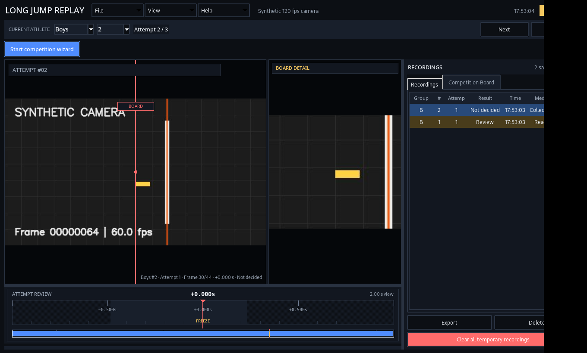
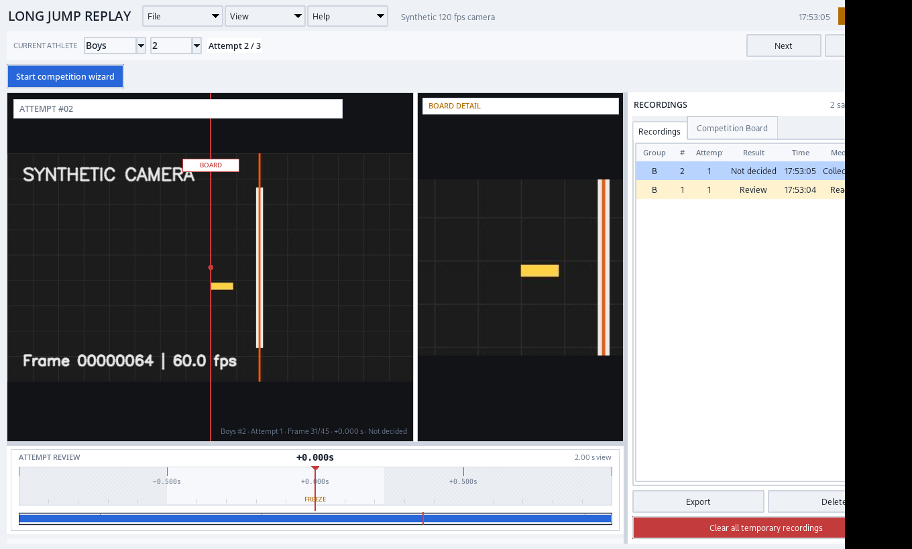

See the line clearly
Calibrate the board guide and take-off region directly on the video. Keep the decision anchored to the frame.
BOARD CALIBRATIONFOUL REVIEW STATION / WINDOWS 2.3
LongJumpReplay keeps the runway live while you freeze, step through, and review the exact moment that matters.
THE DECISION WINDOW
The decisive moment should not disappear into a rolling buffer. LongJumpReplay turns the live feed into a calm, repeatable review workflow.
FOR PEOPLE AT THE PIT
Designed around the rhythm of a real competition: fast capture, precise review, and an evidence trail you can explain.
Calibrate the board guide and take-off region directly on the video. Keep the decision anchored to the frame.
BOARD CALIBRATIONUse the timeline, frame stepping, keyboard controls, or ShuttleXpress to find the moment with confidence.
FRAME CONTROLThe competition board ties recordings, athletes, attempts, decisions, and exports together.
COMPETITION BOARDLongJumpReplay helps the official review the moment. It never pretends to measure distance or decide Valid/Foul for you.
OPERATOR CONTROLFOR OFFICIALS
Keep the competition moving while giving close take-offs the attention they deserve.
See the license offer →FOR CLUBS & COACHES
Use the same controls for training review, event preparation, and athlete feedback.
Download for Windows →THE STATION, AT A GLANCE
The same workflow is available in a high-contrast dark theme and a clean light theme for different rooms, screens, and operators.


THE LAUNCH OFFER
A perpetual license for one Windows computer, with the portable MSI installer and email support included.
No online account. No cloud upload. Contact us for your machine-bound key.
READY WHEN YOU ARE
The MSI installs LongJumpReplay into Program Files and adds a normal Windows Start Menu entry. Your recordings and settings stay in your user profile.
LET’S TALK ABOUT YOUR SETUP
Tell us about your camera, event format, or club workflow. We’ll reply with the next step and a machine-bound license key process.
xpisar10@gmail.com ↗